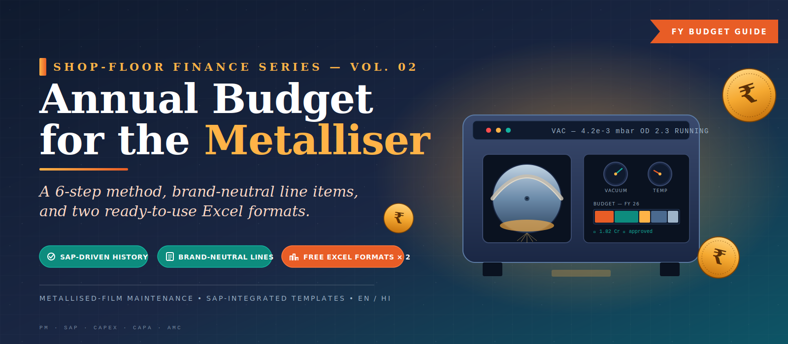
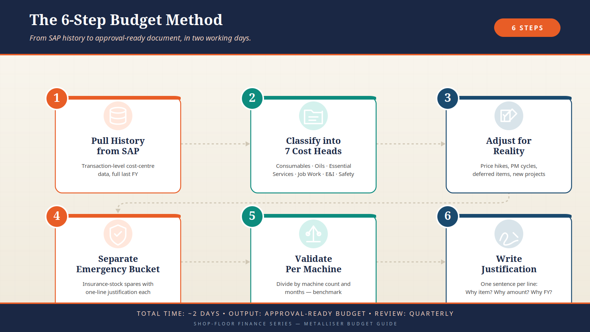
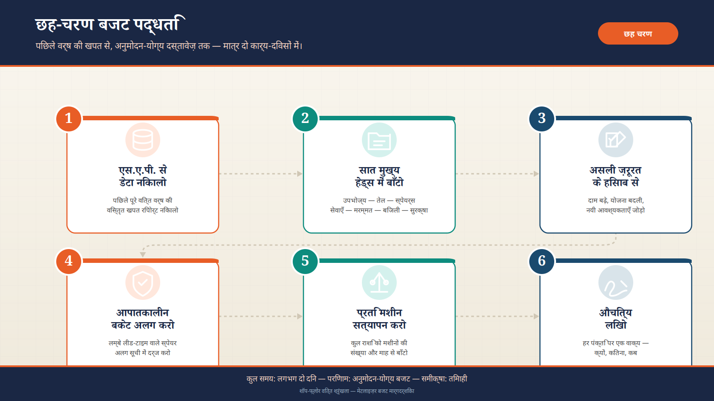

💰 How to Build an Annual Budget for Your Metalliser (or Any Production Line)
It's October. Finance has sent that annual email: "Submit your department budget by 15th November." You open a blank Excel. Cursor blinks. Somewhere deep inside, you already know — this is the document that decides whether your critical spare gets approved in March, whether your OEM service visit happens on time, whether your chill-drum survives the next monsoon.
A maintenance budget is not a spreadsheet. It's a one-year operating contract between you, finance, and the machine. Do it badly and you spend the year chasing emergency purchase orders. Do it well and you walk into every monthly review with a clean conscience. This blog gives you two ready-to-use budget formats — one simple, one detailed — built from what actually works on Indian metalliser shop floors, and a 6-step method that keeps the numbers defensible.
⚠️ Why Most Maintenance Budgets Fail
- "Last year +10%" disease: The laziest budget method on earth. Fine if last year was sensible; catastrophic if a major component was deferred — you now have a 4-year deferred item sitting in year 5's cash-flow crisis.
- No line-item backup: When finance asks "what is this ₹18 lakh?", and the answer is "general spares", the number gets slashed.
- Routine mixed with emergency: A ₹25 lakh insurance spare hidden inside routine consumables looks like overspending. Separated, it looks like risk management.
- Brand-locked line items: Budgets written around one OEM brand get rejected when procurement switches vendors mid-year. Always budget the generic category, not the brand.
- No "per machine" or "per month" figure: Senior management benchmarks across plants. If your number isn't expressed per-machine, it can't be compared, and comparison without context is usually unkind.
🎯 The 6-Step Budget Method
| Step | Action | Time | Output |
|---|---|---|---|
| 1. Pull history | Extract Last FY actual cost-centre consumption from SAP / ERP | 1 day | Raw baseline in Excel |
| 2. Classify | Split into 7 heads: Consumables, Oils, Essential, Services, Job Work, E&I, Safety/Stationery | 2 hours | Category-wise last FY numbers |
| 3. Adjust for reality | Check each line: price hike, quantity change, new PM, deferred item | 3 hours | Line-wise proposed FY numbers |
| 4. Add Emergency bucket | List insurance spares (long-lead, machine-stop risk) with justification | 2 hours | Separate emergency schedule |
| 5. Validate per machine | Divide total by number of machines; sanity-check against benchmark | 30 min | One-line per-machine cost |
| 6. Write justification | One sentence per line. "Why this item, why this amount, why this FY" | 2 hours | Approval-ready document |
📋 Step 1 — Pull History (1 day)
Budget starts in the ERP, not in Excel. Before you type a single number, go to your SAP cost-centre report and pull the last full financial year's consumption against your department's cost centre. Pull it at transaction-level — item code, description, quantity, value. Not summarised. Not categorised. Raw.
Why raw? Because the categorisation you impose today is how you will defend the budget for the next 12 months. If you accept whatever category SAP assigned, you are defending someone else's logic.
- Time window: Full previous FY, month-wise — identifies seasonal spikes
- Cost-centre filter: Your department only — not the whole plant
- Plant-to-vendor check: Any invoice above ₹5 lakh, verify the PO was correctly booked — one wrong booking can distort the year
- Exclude Capex: Machine purchases, major retrofits — those go in a separate Capex budget, not maintenance
🗂️ Step 2 — Classify into 7 Cost Heads
Every spare, oil, service, and consumable in a metalliser plant falls into one of seven buckets. Force yourself to classify every line item — it stops "miscellaneous" from swallowing the budget.
| # | Cost Head | Examples (Generic) | Typical Share |
|---|---|---|---|
| 1 | Consumables | Aluminium wire, ceramic boats, copper clamps, graphite tape, masking / cork tape, emery, glass fabric | 35–45% |
| 2 | Lub & Oils | Rotary-vane pump oil, booster oil, diffusion-pump silicone oil, gear oil, bearing grease, chiller glycol | 5–10% |
| 3 | Essential Spares | Pump spare kits, rollers, seals, shields, chuck spares, gauges — breakdown prevention stock | 15–20% |
| 4 | Services & AMC | OEM annual visit, pump overhaul, chiller service, helium leak testing, NABL calibration | 10–15% |
| 5 | Repair Job Work | Bow-roller re-rubberisation, shaft repair, motor rewinding, pump overhaul at vendor | 5–10% |
| 6 | E&I Spares | VFDs, PLCs, contactors, relays, sensors, cables, connectors | 8–12% |
| 7 | Safety & Stationery | PPE, fire extinguishers, logbooks, signage, training material | 3–5% |
An eighth head sits above all seven: Emergency Spares (insurance stock). Keep it separate — it is not routine maintenance, it is risk cover.
🏭 Step 3 — Substitute Brand Names with Generic Categories
This is where most plants lose flexibility. If your budget line says "Busch Cobra NC 630 service", procurement cannot easily swap to a Leybold or Edwards service without a budget amendment. Write it as the generic category, and put the specific brand in the remarks column.
| Component | Generic Line-Item (Budget) | Example Brands / Substitutes (Remarks) |
|---|---|---|
| Dry-Screw Pump | Vacuum Pump Spares — Dry/Screw | Busch Cobra / Leybold DryVac / Edwards GXS / Pfeiffer HeptaDry |
| Roots Booster | Vacuum Pump Spares — Roots Booster | Aerzen / Leybold RUVAC / Edwards EH / Pfeiffer Okta |
| Rotary-Vane Pump | Vacuum Pump Spares — Rotary Vane | Busch R5 / Leybold SOGEVAC / Edwards RV / Pfeiffer Duo |
| Diffusion Pump | Vacuum Pump Spares — Diffusion | Varian / Edwards Diffstak / Leybold DI |
| DP Silicone Oil | Diffusion Pump Oil (silicone) | Santovac 5 / Dow 704 / Dow 705 / CVC Silicone-4 |
| Rotary Pump Oil | Rotary-Vane Pump Oil (mineral / diester) | Busch R530 / Leybold LVO 108 / Edwards 19 |
| Booster Oil | Roots Booster Oil (synthetic) | Anderol 555 / Aerzen / equivalent PAO |
| Cryo-cooler / Water-Vapour Pump | Cryopump Spares & Service | Polycold / Brooks / Sumitomo / Oerlikon — helium leak AMC |
| Spreader Roller | Spreader Roller Re-rubberisation | Kickert / Mount Hope / generic re-rubber vendor |
| Expanding Shafts | Expanding-Shaft Spares | Svecom / Double-E / Goldenrod |
| Bearings | Bearings (deep-groove / roller) | SKF / FAG / NTN / NSK |
| VFD Drives | Drives & VFD Spares | Siemens G120 / Schneider ATV71 / ABB ACS / Emerson Unidrive |
🛡️ Step 4 — Separate Emergency Bucket (Insurance Stock)
Emergency spares are not things you plan to use. They are things you hope not to use but keep anyway because the machine stops without them. If you bury them in routine spares, finance sees overspending. If you list them separately, they look like what they are: risk insurance.
- Source / Evaporator Frame: OEM-only, 8–16 week lead time. Machine-stop if it fails.
- Main Drive Motor: Long-lead rewind / replacement cycle.
- Complete Drum Shield Set: Damage during cleaning can halt production for a week.
- Standby Rotary Pump (new): When vacuum falls off and you need to swap pumps in 4 hours, not 4 days.
- Heating & Cooling Circulation Pump: Chill-drum goes offline — entire line stops.
- Cryopump Critical Valve / E-box: Specialist spare, long lead.
Each emergency line needs a one-sentence justification: "Machine stops if failed; OEM lead time 12 weeks; last failure in plant X caused 7-day stoppage." That single sentence is the difference between approval and rejection.
📏 Step 5 — Validate Per Machine and Per Month
A ₹1.8 crore budget means nothing on its own. Divide it:
- Per machine: Total ÷ number of active machines. Compare across your plants or against industry benchmark.
- Per month: Total ÷ 12. This is your monthly commitment — and finance will track against it month-by-month.
- Per kg / per MT of production: If you know annual production tonnage, maintenance cost/MT is the single cleanest benchmark. Indian metalliser plants typically land ₹4–7 per kg of metallised film.
✅ Step 6 — Write Justification
One sentence per line is enough. A justification should answer three questions in one sentence:
- Why this item? "Drum bearings past 5-year life."
- Why this amount? "Quote from SKF dated Sept, 4 bearings × ₹18,500."
- Why this FY? "Planned for Q2 shutdown July '26."
Stitched together: "Drum bearings past 5-year life — quote from SKF dated Sept, 4 bearings × ₹18,500 — planned for Q2 shutdown July '26." That's a line finance will approve.

🏭 Real Shop Floor Story — The ₹22 Lakh Cryopump That Wasn't in the Budget
October, FY budget season, a large metalliser plant. The maintenance engineer had prepared the annual budget carefully. Last year's consumption pulled from SAP, categorised, inflated by 8% for price hike. Total came to ₹1.4 crore. Finance smiled, approved it in the first meeting. Clean year ahead.
March of the new FY. A routine PM on Metalliser-2 revealed that the cryopump compressor was making an abnormal sound. Specialist vendor called. Diagnosis: the compressor's internal valve assembly had failed. Cost of replacement compressor: ₹22 lakh. Lead time: 10 weeks.
The engineer went back to his budget file. The cryopump did not appear as a line item — it was buried inside "Essential Spares ₹18 lakh" as an implicit allowance. He had never imagined the compressor itself failing. Finance's reaction in the emergency approval meeting was predictable: "This was not in the approved budget."
Three weeks of back-and-forth followed. Approval finally came — but only after the metalliser had been running on 70% vacuum performance for 18 production days, generating off-spec film that cost ₹14 lakh in quality claims. The ₹22 lakh cryopump, plus ₹14 lakh in quality claims, plus 18 days of opportunity cost = approximately ₹48 lakh of damage — all because one line item was missing from a ₹1.4 crore budget.
The plant rewrote its budget methodology. Emergency Spares was separated into its own schedule with line-by-line justification. Every long-lead, machine-stop component was listed, including cryopump compressor, main drive motor, source frame, and chill-drum circulation pump. Total emergency budget: ₹35 lakh. Finance approved it in the next cycle, because it was now a document about risk, not about spending. The next cryopump failure — 14 months later — was a 2-week resolution, not 3.
Lesson: An annual budget is not a prediction of what will be spent. It is a pre-approval of what might need to be spent. The items you leave out are the ones that hurt you. List them all — clearly categorised, clearly justified — and finance becomes a partner instead of a gatekeeper.
📐 Two Formats — Which One to Use?
| Situation | Use Format A (Simple) | Use Format B (Detailed) |
|---|---|---|
| Running machine with 3+ years history | ✅ Fast, category-based | Overkill |
| New machine / new line | Too thin — no basis | ✅ Bottom-up line items |
| Internal department review | ✅ 1-page summary | Too long |
| CEO / Finance approval | Use as cover sheet | ✅ Attach as annexure |
| Budget is < ₹50 lakh | ✅ Enough detail | Disproportionate |
| Budget is > ₹1 crore | Summary only | ✅ Needed for defensibility |
| Multi-year forecast | ✅ Easy to project | Harder to maintain |
Recommended: prepare both. Format A is your 1-pager for the approval meeting. Format B is the annexure that backs it up if finance drills down.
📊 Typical Budget Distribution — Metalliser
| Category | Typical Share | Red Flag If… |
|---|---|---|
| A. Evaporation Consumables (wire, boats) | 35–45% | < 30% → under-counted; > 50% → yield problem |
| B. Vacuum System (oils + consumables) | 8–12% | > 15% → oil leak / over-changing |
| C. Cooling System | 2–4% | > 6% → chemistry / chiller issue |
| D. Winding System | 3–6% | > 8% → roller wear problem |
| E. Electrical & Drives | 8–12% | > 15% → electrical instability |
| F. Mechanical Spares | 5–8% | > 10% → PM discipline gap |
| G. OEM Services & AMC | 10–15% | < 8% → skipping services; > 18% → over-servicing |
| H. Safety & PPE | 2–4% | < 2% → compliance risk |
| I. Calibration & Testing | 1–3% | < 1% → audit risk |
| J. Cleaning & Housekeeping | 1–2% | — |
| K. Contingency | 3–5% | > 8% → insufficient planning |
🛡️ Prevention — Avoid the 7 Classic Budget Mistakes
- Don't copy last year. Pull every line fresh from SAP, even if the number ends up similar.
- Don't hide emergency in routine. Separate schedule, separate approval.
- Don't lock a brand. Generic line, brand in remarks.
- Don't skip services. OEM visit saved once is three breakdowns next year.
- Don't forget calibration. One NABL audit failure costs more than a year of calibrations.
- Don't over-specify contingency. 5% is defensible; 10% looks like bad planning.
- Don't submit without per-machine figure. It's the one number senior management will remember.
📥 Free Downloads — Two Budget Formats
Two ready-to-use Excel formats with all formulas, category headers, justification sheets, and instructions built in. Open, fill your numbers, print. All brand names are kept generic with common substitutes listed:
💰 Metalliser (या किसी भी Production Line) के लिए Annual Budget कैसे बनाएँ
October आ गया। Finance का वो सालाना email आ गया: "15 November तक Department Budget submit करो।" Blank Excel खोलते हैं, cursor blink कर रहा है। मन में कहीं गहरे पता है — यही वो document है जो तय करेगा कि March में आपका critical spare approve होगा या नहीं, OEM service visit time पर होगी या नहीं, monsoon में chill-drum बच पाएगा या नहीं।
Maintenance Budget सिर्फ़ एक spreadsheet नहीं है। यह आप, Finance, और Machine के बीच का एक साल का operating contract है। ग़लत बनाया — पूरा साल emergency PO भागते रहोगे। सही बनाया — हर monthly review में आराम से चले जाओगे। यह blog आपको देता है दो ready-to-use budget formats — एक simple, एक detailed — जो सच्ची Indian metalliser shop floor की practice पर बने हैं, और एक 6-step method जो numbers को defensible रखता है।
⚠️ ज़्यादातर Budgets क्यों फेल होते हैं
- "पिछले साल +10%" की बीमारी: दुनिया का सबसे lazy तरीका। अगर पिछला साल सही था तो ठीक; वरना एक deferred item चार साल बाद cash-flow crisis बनता है।
- Line-item backup नहीं: Finance पूछे "ये ₹18 लाख क्या है?" — और जवाब हो "general spares" — तो number कट जाता है।
- Routine और Emergency मिला हुआ: ₹25 लाख का insurance spare routine में छुपाओ तो overspending दिखता है। Separate करो तो risk management दिखता है।
- Brand-lock line items: एक OEM brand के नाम पर लिखा budget, procurement दूसरा vendor ले तो reject हो जाता है। हमेशा generic category पर budget बनाओ, brand नहीं।
- "Per machine" या "per month" figure नहीं: Senior management plants के बीच compare करता है। अगर आपका number per-machine नहीं है, तो comparison नहीं हो सकता।
🎯 6-Step Budget Method
| Step | Action | Time | Output |
|---|---|---|---|
| 1. History निकालो | SAP / ERP से Last FY की actual cost-centre consumption निकालो | 1 दिन | Raw baseline Excel में |
| 2. Classify करो | 7 heads में बाँटो: Consumables, Oils, Essential, Services, Job Work, E&I, Safety/Stationery | 2 घंटे | Category-wise last FY numbers |
| 3. Reality से adjust | हर line check: price hike, quantity change, new PM, deferred item | 3 घंटे | Line-wise proposed FY numbers |
| 4. Emergency bucket जोड़ो | Insurance spares list (long-lead, machine-stop risk) justification के साथ | 2 घंटे | Separate emergency schedule |
| 5. Per machine validate | Total ÷ machines की संख्या; benchmark से sanity-check | 30 मिनट | Per-machine cost figure |
| 6. Justification लिखो | हर line पर एक वाक्य। "क्यों item, क्यों amount, क्यों FY" | 2 घंटे | Approval-ready document |
📋 Step 1 — History निकालो (1 दिन)
Budget Excel में नहीं, ERP में शुरू होता है। एक भी number type करने से पहले, SAP cost-centre report पर जाकर पिछले पूरे FY की consumption अपने department cost centre पर pull करो। Transaction-level पर — item code, description, quantity, value। Summarise नहीं। Categorise नहीं। Raw।
Raw क्यों? क्योंकि आज जो categorisation आप करते हो, वही अगले 12 महीने आपको defend करनी है। SAP जो category देता है उसे accept कर लिया, तो आप किसी और की logic defend कर रहे हो।
- Time window: पूरा पिछला FY, month-wise — seasonal spikes पता चलती हैं
- Cost-centre filter: सिर्फ़ आपका department — पूरा plant नहीं
- Plant-to-vendor check: ₹5 लाख से ऊपर का कोई invoice हो, PO की booking verify करो — एक ग़लत booking साल को distort कर देती है
- Capex अलग: Machine purchase, major retrofits — ये अलग Capex budget में जाते हैं, maintenance में नहीं
🗂️ Step 2 — 7 Cost Heads में Classify करो
Metalliser plant का हर spare, oil, service, consumable इन सात बकेट्स में से किसी एक में जाता है। हर line item को force करके classify करो — इससे "miscellaneous" budget नहीं खा जाता।
| # | Cost Head | Examples (Generic) | Typical Share |
|---|---|---|---|
| 1 | Consumables | Aluminium wire, ceramic boats, copper clamps, graphite tape, masking / cork tape, emery, glass fabric | 35–45% |
| 2 | Lub & Oils | Rotary-vane pump oil, booster oil, DP silicone oil, gear oil, bearing grease, chiller glycol | 5–10% |
| 3 | Essential Spares | Pump spare kits, rollers, seals, shields, chuck spares, gauges — breakdown prevention stock | 15–20% |
| 4 | Services & AMC | OEM annual visit, pump overhaul, chiller service, helium leak test, NABL calibration | 10–15% |
| 5 | Repair Job Work | Bow-roller re-rubberisation, shaft repair, motor rewinding, vendor pump overhaul | 5–10% |
| 6 | E&I Spares | VFDs, PLCs, contactors, relays, sensors, cables, connectors | 8–12% |
| 7 | Safety & Stationery | PPE, fire extinguishers, logbooks, signage, training material | 3–5% |
सातों से ऊपर एक आठवाँ head है: Emergency Spares (insurance stock)। इसे अलग रखो — यह routine maintenance नहीं, risk cover है।
🏭 Step 3 — Brand Names की जगह Generic Categories
यहीं पर ज़्यादातर plants flexibility खो देते हैं। अगर budget line में लिखा है "Busch Cobra NC 630 service", तो procurement बीच साल में Leybold या Edwards पर switch नहीं कर सकता बिना budget amendment के। इसे generic category के रूप में लिखो, brand को remarks column में डालो।
| Component | Generic Line-Item (Budget) | Example Brands / Substitutes (Remarks) |
|---|---|---|
| Dry-Screw Pump | Vacuum Pump Spares — Dry/Screw | Busch Cobra / Leybold DryVac / Edwards GXS / Pfeiffer HeptaDry |
| Roots Booster | Vacuum Pump Spares — Roots Booster | Aerzen / Leybold RUVAC / Edwards EH / Pfeiffer Okta |
| Rotary-Vane Pump | Vacuum Pump Spares — Rotary Vane | Busch R5 / Leybold SOGEVAC / Edwards RV / Pfeiffer Duo |
| Diffusion Pump | Vacuum Pump Spares — Diffusion | Varian / Edwards Diffstak / Leybold DI |
| DP Silicone Oil | Diffusion Pump Oil (silicone) | Santovac 5 / Dow 704 / Dow 705 / CVC Silicone-4 |
| Rotary Pump Oil | Rotary-Vane Pump Oil (mineral / diester) | Busch R530 / Leybold LVO 108 / Edwards 19 |
| Booster Oil | Roots Booster Oil (synthetic) | Anderol 555 / Aerzen / equivalent PAO |
| Cryo-cooler | Cryopump Spares & Service | Polycold / Brooks / Sumitomo / Oerlikon — helium leak AMC |
| Spreader Roller | Spreader Roller Re-rubberisation | Kickert / Mount Hope / generic re-rubber vendor |
| Expanding Shafts | Expanding-Shaft Spares | Svecom / Double-E / Goldenrod |
| Bearings | Bearings (deep-groove / roller) | SKF / FAG / NTN / NSK |
| VFD Drives | Drives & VFD Spares | Siemens G120 / Schneider ATV71 / ABB ACS / Emerson Unidrive |
🛡️ Step 4 — Emergency Bucket अलग रखो (Insurance Stock)
Emergency spares वो चीज़ें नहीं हैं जिन्हें आप use करने की plan करते हो। वो चीज़ें हैं जिन्हें आप use नहीं करना चाहते, पर रखते हो क्योंकि इनके बिना machine रुक जाती है। अगर routine spares में छुपा दो, तो finance को overspending दिखता है। Separate list करो, तो वो वही दिखेगा जो है: risk insurance।
- Source / Evaporator Frame: सिर्फ़ OEM से मिलता है, 8–16 हफ्ते का lead time। Fail हुआ तो machine रुक जाती है।
- Main Drive Motor: लंबा rewind / replacement cycle।
- Complete Drum Shield Set: Cleaning में damage हो गया तो एक हफ्ता production बंद।
- Standby Rotary Pump (नया): Vacuum गिरा तो 4 घंटे में pump swap करना है, 4 दिन नहीं।
- Heating & Cooling Circulation Pump: Chill-drum offline — पूरी line रुकी।
- Cryopump Critical Valve / E-box: Specialist spare, long lead।
हर emergency line पर एक वाक्य justification चाहिए: "Fail हुआ तो machine रुकती है; OEM lead time 12 हफ्ते; पिछली बार Plant X में 7 दिन का stoppage हुआ था।" यही एक वाक्य approval और rejection के बीच का फ़र्क़ है।
📏 Step 5 — Per Machine और Per Month Validate करो
₹1.8 करोड़ का budget अकेले कुछ नहीं कहता। उसे divide करो:
- Per machine: Total ÷ active machines की संख्या। अपने plants के बीच या industry benchmark से compare करो।
- Per month: Total ÷ 12। यह आपकी monthly commitment है — और finance इसी के हिसाब से month-by-month track करेगा।
- Per kg / per MT production: Annual production tonnage पता है तो maintenance cost/MT सबसे clean benchmark है। Indian metalliser plants typically ₹4–7/kg metallised film पर होते हैं।
✅ Step 6 — Justification लिखो
हर line पर एक वाक्य काफ़ी है। Justification को तीन सवालों के जवाब एक वाक्य में देने चाहिए:
- यह item क्यों? "Drum bearings 5-year life पार।"
- यह amount क्यों? "SKF quote सितंबर का, 4 bearings × ₹18,500।"
- इसी FY क्यों? "Q2 shutdown July '26 में planned।"
एक साथ: "Drum bearings 5-year life पार — SKF quote सितंबर का, 4 bearings × ₹18,500 — Q2 shutdown July '26 में planned।" यह line finance approve करेगा।

🏭 असली Shop Floor कहानी — वो ₹22 लाख का Cryopump जो Budget में नहीं था
October, FY budget season, एक बड़ा metalliser plant। Maintenance engineer ने annual budget सावधानी से बनाया। पिछले साल की consumption SAP से pull की, categorise किया, price hike के लिए 8% बढ़ाया। Total आया ₹1.4 करोड़। Finance ने पहली meeting में ही approve कर दिया। साल साफ़ दिख रहा था।
नए FY का March। Metalliser-2 पर routine PM में पता चला कि cryopump का compressor असामान्य आवाज़ कर रहा है। Specialist vendor बुलाया। Diagnosis: compressor का internal valve assembly fail हो गया है। Replacement compressor की cost: ₹22 लाख। Lead time: 10 हफ्ते।
Engineer ने budget file खोली। Cryopump कहीं line item में नहीं था — "Essential Spares ₹18 लाख" में implicitly छुपा था। Compressor ख़ुद fail होगा, यह कभी imagine नहीं किया था। Emergency approval meeting में finance का reaction predictable था: "यह approved budget में नहीं है।"
तीन हफ्ते back-and-forth चला। Approval आख़िर में मिली — पर तब तक metalliser 18 production days तक 70% vacuum performance पर चला, off-spec film बनी जिसकी quality claim ₹14 लाख की आई। ₹22 लाख का cryopump + ₹14 लाख quality claims + 18 दिन का opportunity cost = लगभग ₹48 लाख का नुकसान — सिर्फ़ इसलिए कि ₹1.4 करोड़ के budget में एक line item छूट गया था।
Plant ने अपनी budget methodology फिर से लिखी। Emergency Spares को अपनी अलग schedule में डाला गया, हर line पर justification के साथ। हर long-lead, machine-stop component list में आया — cryopump compressor, main drive motor, source frame, chill-drum circulation pump। कुल emergency budget: ₹35 लाख। अगले cycle में finance ने approve कर दिया, क्योंकि अब यह spending नहीं, risk का document था। अगली बार cryopump fail हुआ — 14 महीने बाद — 2 हफ्ते में solve हुआ, 3 में नहीं।
सीख: Annual budget यह prediction नहीं है कि क्या ख़र्च होगा। यह pre-approval है कि क्या ख़र्च हो सकता है। जो item आप छोड़ देते हो, वही बाद में तकलीफ़ देता है। सबको list करो — clearly categorised, clearly justified — और finance gatekeeper की जगह partner बन जाता है।
📐 दो Formats — कौन सा कब इस्तेमाल करें?
| स्थिति | Format A (Simple) इस्तेमाल करें | Format B (Detailed) इस्तेमाल करें |
|---|---|---|
| Running machine, 3+ साल history | ✅ Fast, category-based | ज़रूरत से ज़्यादा |
| नयी machine / नयी line | बहुत पतला — कोई basis नहीं | ✅ Bottom-up line items |
| Internal department review | ✅ 1-page summary | बहुत लंबा |
| CEO / Finance approval | Cover sheet के लिए | ✅ Annexure के रूप में |
| Budget < ₹50 लाख | ✅ काफ़ी detail | अनुपातहीन |
| Budget > ₹1 करोड़ | सिर्फ़ summary | ✅ Defensibility के लिए ज़रूरी |
| Multi-year forecast | ✅ Project करना आसान | Maintain करना मुश्किल |
सुझाव: दोनों बनाओ। Format A approval meeting का 1-pager है। Format B वो annexure है जो finance drill-down करे तो support करता है।
📊 Typical Budget Distribution — Metalliser
| Category | Typical Share | Red Flag अगर… |
|---|---|---|
| A. Evaporation Consumables (wire, boats) | 35–45% | < 30% → under-counted; > 50% → yield problem |
| B. Vacuum System (oils + consumables) | 8–12% | > 15% → oil leak / over-changing |
| C. Cooling System | 2–4% | > 6% → chemistry / chiller issue |
| D. Winding System | 3–6% | > 8% → roller wear problem |
| E. Electrical & Drives | 8–12% | > 15% → electrical instability |
| F. Mechanical Spares | 5–8% | > 10% → PM discipline gap |
| G. OEM Services & AMC | 10–15% | < 8% → services skip; > 18% → over-servicing |
| H. Safety & PPE | 2–4% | < 2% → compliance risk |
| I. Calibration & Testing | 1–3% | < 1% → audit risk |
| J. Cleaning & Housekeeping | 1–2% | — |
| K. Contingency | 3–5% | > 8% → planning कमज़ोर |
🛡️ Prevention — 7 Classic Budget ग़लतियाँ से बचो
- पिछले साल को copy मत करो। SAP से हर line fresh निकालो, चाहे number same आए।
- Emergency को routine में मत छुपाओ। Separate schedule, separate approval।
- एक brand पर lock मत हो। Generic line, brand को remarks में।
- Services skip मत करो। एक बार OEM visit save की, अगले साल तीन breakdown।
- Calibration मत भूलो। एक NABL audit failure पूरे साल की calibration से महँगा पड़ता है।
- Contingency ज़्यादा मत रखो। 5% defensible है; 10% ख़राब planning दिखाता है।
- Per-machine figure के बिना submit मत करो। यही एक number senior management को याद रहता है।
📥 मुफ़्त Downloads — दो Budget Formats
दो ready-to-use Excel formats — सभी formulas, category headers, justification sheets, और instructions built-in। खोलो, numbers भरो, print करो। सारे brand names generic रखे गए हैं, common substitutes की list दी गई है: